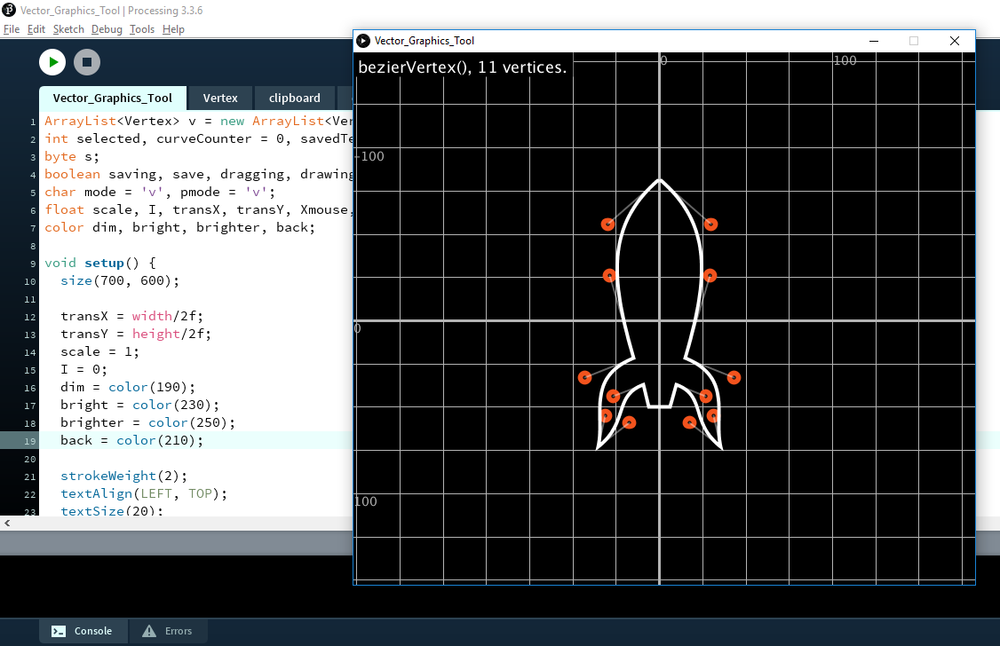

back
Utilities
- Art Prompt Generator
A fairly common technique in the arts is using cutouts from magazines or newspapers to compose random phrases,
Generating perhaps something surprising and interesting, or at least inspiring in some sense. This project has the same purpose.
The modular interface allows the user to select and organize cards of many different categories e generate random data for each one
So one assembles a board with cards and labels delineating the rough concept and the program generates the specifics!
Made with p5.js.
- Calendar Maker
A simple calendar maker on the browser with extensive customization options.
Made with p5.js.

- dmccooey to STL
A converter from the notation found at David I. McCooey's awesome polyhedron encyclopedia to STL format.
- Processing Vector Graphics Tool
Processing has a wonderful framework for generating vector graphics programatically,
but it can be pretty tough to draw shapes by typing in numbers and very clunky in the
case of bezier curves. One alternative is to create this image in a separate software
and import it as an SVG, which not everyone can do, especially begginners, and to
create dynamic shapes you need the raw data so that you can splice your variables right
into the vertex() calls.
So this is simple vector graphics editor which outputs Processing code. I plan to add
more functionality and to eventually convert it into a proper 'Tool' for the Processing
IDE.

- Processing IDE theme editor
This is another project for a Processing IDE tool. version 3.4 brought the unified theme
file which makes it easier to customize the appearance of your IDE. this work-in-progress
Editor gives you a real-time preview of your changes and exports properly formated text
for the theme file. It still needs to be made a bit more user-friendly, clicking on the
preview to select the element would be nice, but that's a whole other conversation.
back
{kind=link}